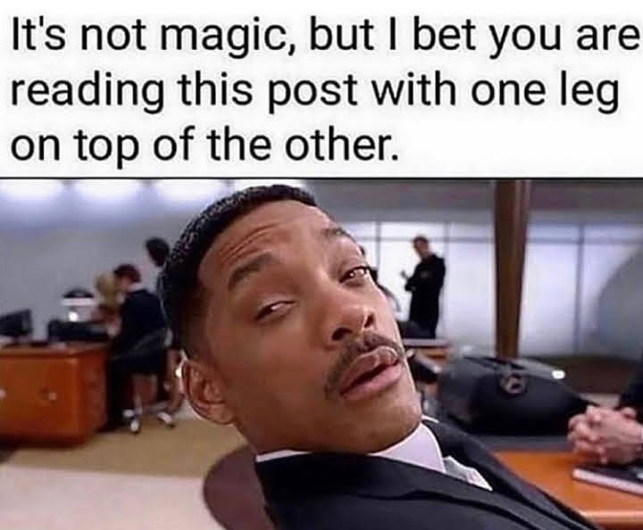

Science is discovering the essential truths about what exists in the universe, engineering is about creating things that never existed - Elon musk

Hello There
Welcome to My official website website As I call it. Here You willl find out about anything you would like to know about me and what I am doing
about me
I really love learning new things through Wonder and and the fun of learning. Working with people and meeting New friend around the world hashelp me
to grow in who I am now. I believe one of the greatest gift we are given is ow we can connect to each other. Well enough of the lecture haha, I am a big
fan-boy of memes, you would probably notice it. Skate borading is one of the best thing I enjoy, well dont forgot soccer that the greatest, Running yeah
do it a lot(*wispering* but not in a competition yet üòâ). I enjoy Challlege though, and especially solving real world problem, so I do take part of
the new york academy of sciences, as a member of junior academy.Being part of this, we students work together
to solve real world problem, and so I am very intersted in cutural programs,like AFS and other online conference is base on learning other culture and the
great people in there or even connecting. I then sometimes find my self as working as a leader in teams, well I enjoy it as Ilove listenning to feedback I
the team and managing the team haha. Music nah,Dancing Maybe :).My free time, well I basically never have a free time as I am always busy doing and learning
something new,but I can say I do give my self some free time as i am on twitter,slack,chatting with people or looking at memes.I am sometimes not good to speak
to, as I am just work and Work some "people" are not like that, so I distance my self a lot I think. COding I has become my favorite thing to do, because it also
envolved thinking some times, especially in C++, Currenclty I am learning a lot, I can say basicallly everything, so I can reallly say What I am doing here,
but You can found at MY Updates.I love reading, well science fiction, I support eletric Car and The world of Sustainability, Well Me with space we Are friend I
just love talikng about it, artificial intelligence, My favourite,Al Will really have a break out througn in fews years, and So I want to be apert of it. Well
that Is just a littel tour around my view of my self, But it also good finding out for your self, or asking people around me,you just never know Untile you found out ~\_(⌵)_/~.